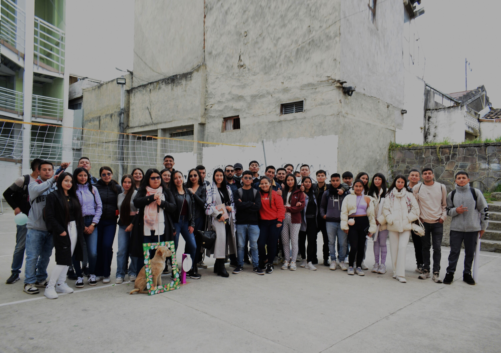
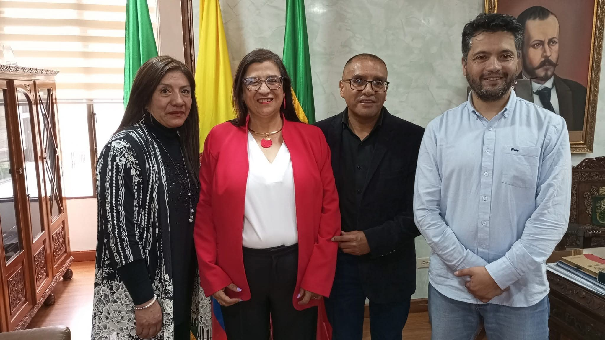
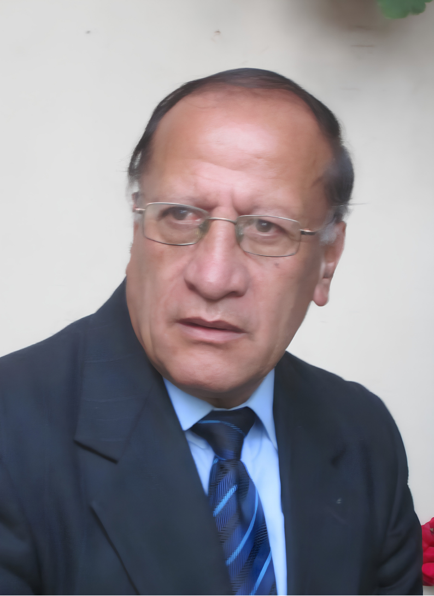
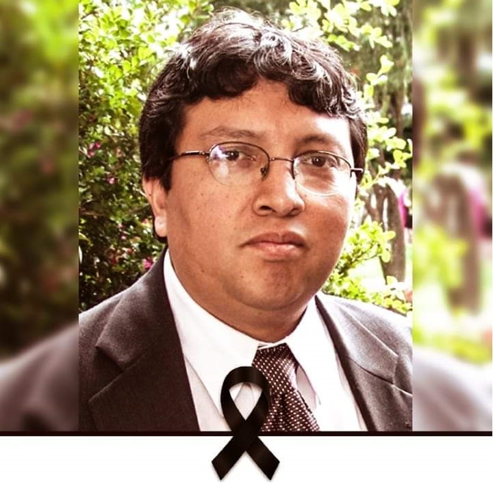
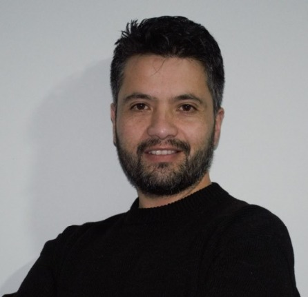

Universidad de Nariño Sede Regional Túquerres
29 años al servicio de la región
La Universidad de Nariño hace presencia en la subregión de la Sabana hace 29 años; su área de influencia se ha extendido progresivamente a un total de tres subregiones: Subregión de la Sabana, Subregión de Abades y Subregión del Piedemonte Costero; que representan más de 11 municipios y se consolida, de acuerdo al proyecto general de regionalización plasmado en el plan de desarrollo institucional "Pensar La Universidad Región 2021-2032", con la conformación de la subregión académica de incidencia campesina, étnica, cultural, ambiental y económica hacia otros municipios.
Inicio de Actividades
La Universidad de Nariño inició actividades académicas en Túquerres durante el Periodo B de 1996, tras la firma de un acuerdo de voluntades con el municipio. En esta primera etapa se ofertaron los programas de Ingeniería de Sistemas (1 cohorte) y Licenciatura en Educación Básica con Énfasis en Ciencias Naturales y Medio Ambiente (2 cohortes); con más de cien estudiantes matriculados, estos programas fueron terminales en la Sede Regional Túquerres.
El 16 de septiembre se firma el primer Convenio Interadministrativo entre la Universidad de Nariño y la alcaldía municipal, siendo sus representantes legales el doctor Edgar Osejo Rosero en calidad de Rector (E) y el señor Héctor Oviedo Rosero (Q.E.P.D.) Alcalde municipal.
Ese mismo año, se firma un contrato de comodato por 20 años donde se hace entrega a la Universidad de Nariño las antiguas instalaciones del distrito de carreteras, infraestructura que tenía habilitada una casa en moderadas condiciones con 5 aulas de clase para que allí funcione la Sede.
Apertura de Programas
Para el semestre B de 1999 se abre el programa de Ingeniería Civil con 50 estudiantes matriculados. A partir de este año y en periodos posteriores se ofertaron programas de pregrado como Administración de Empresas, Ingeniería Agronómica, Ingeniería Electrónica, Ingeniería Agroindustrial y Economía.
De igual forma, se implementaron programas de posgrado, entre ellos las especializaciones en Pedagogía de la Creatividad, Docencia Universitaria y Gerencia en Salud. Además, se desarrollaron cursos de Inglés y cursos preuniversitarios, ambos dirigidos al público en general.
Acta de Acuerdo de Cruce de Cuentas
El 17 de diciembre de 2010 se firma el "Acta de Acuerdo de Cruce de Cuentas y Dación de Pago entre la Alcaldía Municipal de Túquerres y la Universidad de Nariño", acuerdo al que se llega después de que el municipio de Túquerres hubiera dejado de cumplir los acuerdos de aportes a la universidad en las vigencias 2001-2009 por valor de $406.070.000. Acta firmada el 17 de diciembre del año 2010 por el doctor Silvio Sánchez Fajardo (Q.E.P.D.) Rector de la Universidad de Nariño, con esta acta las instalaciones pasan a ser propiedad de la Universidad de Nariño permitiendo realizar inversiones en su infraestructura.
Proyecto de Infraestructura Bloque 2
En el año 2011 la Universidad de Nariño en coordinación con el Movimiento Estudiantil presentan un proyecto de ampliación de infraestructura ante la Gobernación de Nariño en la estrategia adelantada por el gobernador de la época Antonio Navarro Wolff denominada "Cabildos Abiertos" que permitía, mediante el respaldo popular, priorizar iniciativas de impacto regional, en donde la Universidad de Nariño logró obtener el apoyo y fue materializado en contrato interadministrativo No. 286-11 para la unión de esfuerzos en la construcción de un nuevo bloque de aulas en el municipio de Túquerres, el cual se proyecta para 150 estudiantes. Los aportes adquiridos por Cabildo fueron de $170.131.153 y el aporte de la Universidad de $102.000.000. Valor total de inversión $272.131.153, recursos invertidos en la construcción del Bloque Dos.
Para el año 2011 la sede de la Universidad de Nariño logra por primera vez en su historia obtener registro calificado para el programa de Ingeniería Civil mediante Resolución MEN: 9847 DE 21 DE AGOSTO DE 2011. Que fue renovada mediante Resolución MEN: 28114 DE 13 DE DICIEMBRE DE 2017.
Proyecto de Infraestructura Bloque 3
En el año 2012, a través del Sistema General de Regalías se aprobó el proyecto de infraestructura "Ampliación de la cobertura educativa, investigativa y de proyección social con pertinencia y calidad educativa en la Extensión de Túquerres de la Universidad de Nariño" por valor de $2.154.590.891, Este proyecto tuvo reconocimiento a nivel nacional en la premiación "La Noche de los Mejores" por la Dirección Nacional de Planeación - DNP en la categoría de regalías mejor invertidas de participación de la sociedad civil.
Unificación de la tabla de matrículas
En el año 2015 se unifica la tabla de matrículas en las sedes regionales de la Universidad de Nariño, permitiendo que los jóvenes que ingresan a las sedes regionales gocen de una matrícula que se calcula según su situación socioeconómica anulando así el desigual e injusto criterio 'del punto de equilibrio' que era utilizado para calcular las matrículas en los municipios y que obligaban a los estudiantes a pagar matrículas costosas de 1.5 SMLV para estudiantes foráneos y 1 SMLV para los de la subregión. Un hecho relevante producto de esta determinación universitaria es que en el municipio de Túquerres se pague una de las matrículas más económicas de la universidad, mejorando la permanencia y acceso a la formación superior. En la actualidad se aplica la política de gratuidad o matricula cero.
Para este año la sede de la Universidad de Nariño logra por primera vez en su historia obtener registro calificado para el programa de Economía mediante Res: 16120 del 30 de septiembre de 2015, programa y registro que permiten ofrecer la carrera de manera terminal en el municipio de Túquerres.
Obtención de registros calificados
En el año 2016 la sede de la Universidad de Nariño logra por primera vez en su historia obtener registro calificado para el programa de Administración de Empresas mediante Resolución MEN: 9837 DEL 18 de mayo de 2016, programa y registro que está habilitado para ofrecerse de manera terminal en el municipio de Túquerres. Con Resolución MEN 010190 del 21 de Junio de 2024 se realiza la renovación del registro calificado para el programa por 7 años.
En este mismo año la sede de la Universidad de Nariño logra por primera vez en su historia obtener registro calificado para el programa de Ingeniería Agronómica, mediante Resolución MEN: 16919 del 22 de agosto de 2016, programa y registro que está habilitado para ofrecerse de manera terminal en el municipio de Túquerres.
Mejoramiento de obras interiores
Se suscribió un convenio de aportes entre el municipio de Túquerres y la Universidad de Nariño, mediante el cual se asignaron recursos presupuestales destinados al mejoramiento de las obras interiores de la universidad en el municipio de Túquerres.
Dotación de equipos de laboratorio
En 2020, con recursos del Plan de Fomento a la Calidad, se ejecutó el proyecto "Dotación de equipos de laboratorio al municipio de Túquerres - Extensión Universidad de Nariño", con una inversión de $760 millones. Gracias a esta iniciativa se puso en funcionamiento los laboratorios de Química, Biología y Física, beneficiando a estudiantes de los programas de Ingeniería Agronómica, Ambiental, Civil y de Sistemas de las sedes de Túquerres, Tumaco e Ipiales.
Como una acción importante, en el marco de la ejecución del nuevo "Plan de Desarrollo Pensar la universidad-Región", se ejecutó el proyecto "Fortalecimiento de la Estrategia de Regionalización de la Universidad de Nariño" mediante el estudio de Pertinencia Educativa en los municipios de Ipiales, Tumaco y Túquerres - I Fase. Por un valor de 150 millones de pesos que permitió la producción de 8 libros de caracterización: libro de entornos sede regional Túquerres, Ipiales y Tumaco, estudio de información primaria, estudio de oferta y demanda, libro "semana pedagógica", libro de cabildos abiertos que permitieron, mediante participación ciudadana y técnica investigativa, determinar mejores estrategias para la creación de la seccional de la Sabana en el municipio de Túquerres.
Construcción de obras complementarias
En el año 2021 se aprobó el proyecto financiado por el Sistema General de Regalías (SGR) "Construcción obras complementarias en espacios exteriores de la universidad de Nariño municipio de Túquerres" por un valor de $266.490.082, que permitirá tener mejores condiciones de bienestar en infraestructura en la Sede Regional.
Durante el mismo año por iniciativa del Movimiento Estudiantil y por el crecimiento en la demanda académica se tramitó ante el Municipio de Túquerres la donación de un lote para la construcción de un Eco Campus Universitario.
Donación de inmueble
En el año 2022 la Universidad de Nariño Sede Regional Túquerres recibe en donación un predio en el centro del área urbana del municipio de Túquerres denominado "Escuela Alfonso López" donde funcionaba antiguamente el preescolar de la Institución Educativa San Luis Gonzaga, mediante Acuerdo del Consejo municipal No. 05 del 08 de junio de 2022 "Por medio del cual se autoriza al alcalde del municipio de Túquerres para que transfiera a título de donación un bien inmueble a favor de la Universidad de Nariño y se dictan otras disposiciones"; con un área aproximada de 4000 metros cuadrados para la construcción de una nueva sede universitaria.
Formalización de donación
En el año 2023 después de un arduo trabajo de unidad del Movimiento Estudiantil, el Consejo de Administración y la Coordinación de la Sede Túquerres, se logra que el Municipio entregue a título de donación bajo escritura pública No. 1164 a la Universidad de Nariño un predio en el centro del área urbana del municipio de Túquerres denominado "Escuela Alfonso López", con un área aproximada de 4000 metros cuadrados y un estimado de $4.593.221.000 millones de pesos, en donde se pretende la construcción del nuevo Eco Campus Universitario.
En función de la expansión de infraestructura universitaria en el municipio de Túquerres para mejorar las condiciones de calidad, ampliar la cobertura en la región occidente del departamento, se contrató la "Consultoría de diseño arquitectónico, estudios técnicos y coordinación de especialidades de la nueva Sede Túquerres de la Universidad de Nariño en el municipio de Túquerres, departamento de Nariño" por un Valor: $400.000.000 (Cuatrocientos millones de pesos).
Renovación de registro calificado
Mediante Resolución No. 010190 del 21 de junio de 2024, el Ministerio de Educación Nacional renovó el registro calificado del programa de Administración de Empresas de la Universidad de Nariño, ofrecido en modalidad presencial en el municipio de Túquerres. Esta decisión garantiza la continuidad académica del programa por siete años, consolidando su calidad y proyección regional.
En este mismo año, y en el marco del fortalecimiento administrativo de la institución, el Consejo Superior Universitario, mediante Acuerdo 053 del 27 de octubre de 2023, aprobó crear en la Planta Administrativa de la Universidad de Nariño, bajo la naturaleza de Libre Nombramiento y Remoción el cargo de Profesional Universitario Secretario Académico, adscrito al Municipio de Túquerres.




Apertura de nuevos programas
La Universidad de Nariño entrega un bus institucional a la Sede Regional Túquerres, destinado a prácticas académicas y salidas de campo, facilitando el desplazamiento de estudiantes y docentes.
Mediante las Resoluciones MEN No. 009484 del 12 de mayo y No. 010472 del 27 de junio de 2024, los programas de Ingeniería Ambiental y Contaduría Pública renovaron y obtuvieron sus Registros Calificados como Únicos, permitiendo la apertura de sus primeras cohortes en la Sede Regional Túquerres durante el semestre 2025B y fortaleciendo la oferta académica institucional en la región.
Para ese mismo año, la Universidad de Nariño celebra un importante logro académico con la obtención del Registro Calificado Único para su programa de Maestría en Educación Ambiental (Resolución 002546 del 14 de febrero de 2025), logro que permitió su apertura en la Sede Regional Túquerres.
Maestría en Interculturalidad, Desarrollo y Paz Territorial
En 2026 se llevó a cabo en la Sede Regional Túquerres de la Universidad de Nariño el lanzamiento oficial de la Maestría en Interculturalidad, Desarrollo y Paz Territorial, un programa académico que representa una apuesta estratégica por la descentralización del conocimiento y el fortalecimiento de la autonomía regional en el departamento de Nariño.
El nuevo posgrado surge de la alianza entre la Universidad de Nariño, la Pontificia Universidad Javeriana de Cali y la Gobernación de Nariño, articulado a la estrategia Nariño Superior, orientada a promover el acceso equitativo a la educación superior en territorios rurales y periféricos.
Coordinadores de la Sede
-

Sergio Rodríguez Ponce1997-1998 -
Franco Manolo Villota1998-1999
-

Homero Paredes Vallejo (Q.E.P.D)1999-2006 -
David Jimmy Delgado Guerrero2006-2007
-
Mónica Adelaida Benítez Córdoba2008-2009
-
Aida Milena Chávez Morillo2009-2010
-

Alejandro Marcelo Rodríguez Eraso2010-Actualidad